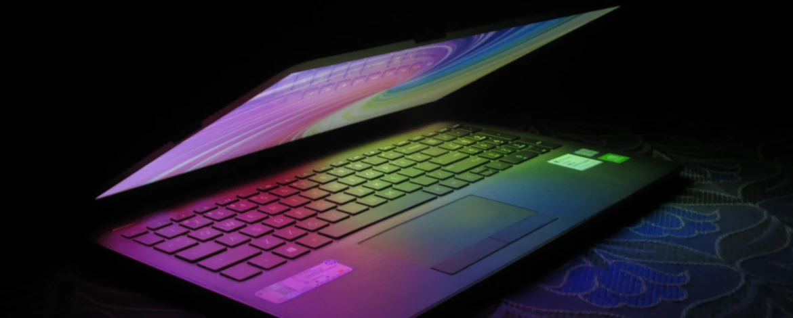
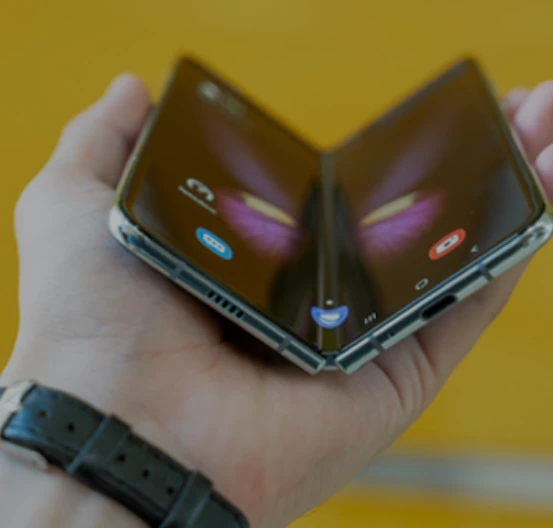
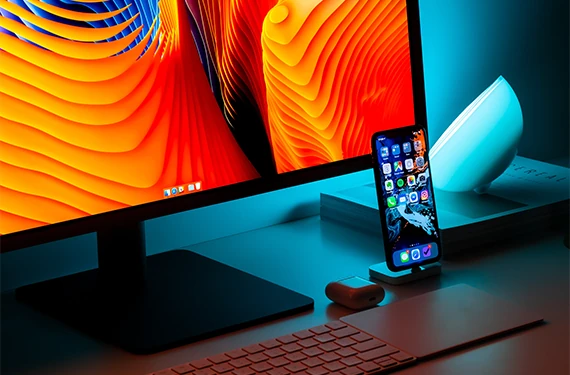

ANALYSE
La technologie personnelle devient plus discrète
Pourquoi les prochains produits essaient moins de montrer leur puissance.
8 min · Aujourd'huiUne sélection de récits, analyses et idées autour des changements qui méritent notre attention.

Pourquoi les prochains produits essaient moins de montrer leur puissance.
8 min · Aujourd'hui
Entretien fictif autour du design de produits et de l'innovation.
6 min · Aujourd'hui
Notifications, organisation et outils : retrouver une expérience plus lisible.
5 min · HierPourquoi l'objet physique reprend une place importante dans l'expérience.
7 min · Hier